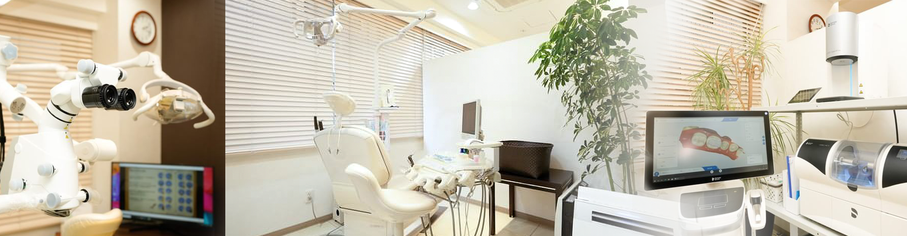
新宿区市谷本村町 ・ 市ヶ谷駅から徒歩4分 ・ 四谷駅から徒歩6分
市ヶ谷防衛省前歯科クリニック
一般歯科 ・ 矯正歯科 ・ 小児歯科 ・ 歯科口腔外科 ・ インプラント ・ 審美歯科 ・ セレック治療
確実・安心・安全で質の高い歯科医療サービスを提供。
お口全体を診る包括的な総合治療で、患者さまの生活の質の向上をサポートいたします。
診療方針
患者さまと長くお付き合いするための総合的な診療
当院では虫歯だけを治療して終わりでは治療の意味がないと考えています。お口のなかを一通り確認し問題点に対応したうえで、定期的な検診で健康な状態を維持することが大切です。当院はこのような総合的な診断を行い、患者さまが自分の歯で気持ちよく生活できるようにサポートしています。
まずカウンセリングを行い、患者さまに治療方針を充分に説明し、同意を得たうえで治療を始めます。レントゲンやモニターを使用し、目でも状態が把握できるよう心がけております。
治療の流れ
- 問診・検査・カウンセリング（原則的には電話予約をお願いしております）
- 治療計画のご提案（インフォームドコンセントを重視しています）
- 治療の開始（痛みの少ない治療・できるだけ削らない治療）
- 定期健診・メインテナンス（予防に勝る治療はありません）
当院は予約制にて診療いたしております。やむを得ずご予約をキャンセルされる際には、遅くてもご予約の3日前には当院へのご連絡をお願い致します。
当クリニックの4つの特徴
- 治療：個々の患者さまのライフステージを考慮し、質の高い治療の選択肢を提供（マイクロスコープ・セレックシステム・レーザー治療・短期集中治療）
- 会話：患者様と十分なコミュニケーションをとり同意のうえ治療を進めます（カウンセリングルーム）
- 衛生：消毒・滅菌等を徹底し、感染対策に取り組んでいます（オートクレーブ・口腔外バキューム）
- 予防：エアフローシステムを用いた身体に優しい予防・メンテナンス（エアフロープロフィラキシスマスター）
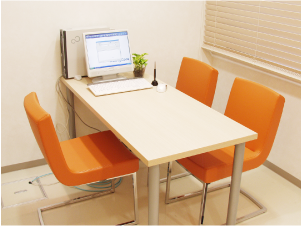
診療科目
虫歯の治療
歯が痛い、しみる、穴が空いているなど。虫歯の初期段階で治療を行うことは歯の延命にもなります。進行状態（C0〜C4）に応じた治療を行います。
根管治療
重度の虫歯を治したい、できれば抜歯を回避したい方へ。マイクロスコープによる可視化と無菌的環境をコンセプトに精度の高い治療を行っています。
歯周病治療
歯がグラグラする、歯茎から出血があるなど。歯周病の進行度合いに応じた治療とメンテナンスを行います。
入れ歯治療
入れ歯が合わない・痛い、すぐに外れるなど。お口に合った入れ歯（義歯）を作製・調整いたします。
審美・セレック
白い歯を最短1日で。セレックシステムによるセラミックの詰め物・被せ物の補綴治療に対応しています。
ホワイトニング
白くきれいな歯にしたい、歯をクリーニングしたい方へ。オフィスホワイトニング・ホームホワイトニングを行っています。
インプラント
しっかりと強く噛めるようになりたい方へ。入れ歯・ブリッジとの違いもご説明し、治療の流れをご提案します。
歯科口腔外科
親知らずの治療、健全な歯の脱臼・破折、顎関節症の治療など。お早めにご相談ください。
小児歯科
子供の虫歯を治したい、未然に防ぎたい方へ。フッ素塗布やシーラントによる小児予防歯科にも力を入れています。
矯正歯科
歯並びが気になる、出っ歯を治したいなど。マウスピース矯正（シュアスマイル・アライナー）や小児矯正（咬合誘導）に対応しています。
予防歯科
定期検診をしたい、口臭が気になる方へ。EMSエアフローによるGBT（Guided Biofilm Therapy）で歯面を傷つけない予防・メンテナンスを行います。
自費料金表
健康保険外の歯科治療（自由診療）の診療費用は料金表をご参照ください。
施設・設備
歯医者に対する「怖い場所」「行きたくない場所」というイメージを無くし、患者様にリラックスして心地よく診療を受けていただきたいと思い、クリニック内の雰囲気づくりにはこだわっています。
専用のカウンセリングルームやクリーンな治療環境に維持されたオペ室の完備はもちろんのこと、マイクロスコープや即日セラミック治療も可能となるセレック、歯周病治療や歯のクリーニングが可能なエアフローなど、最新の治療機器等を積極的に導入しております。
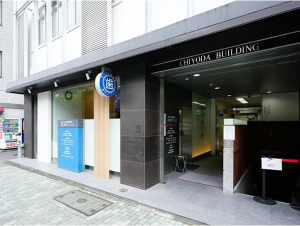
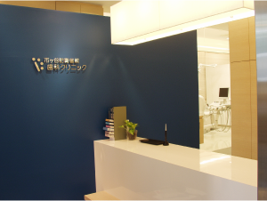
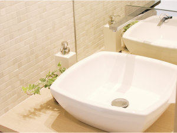
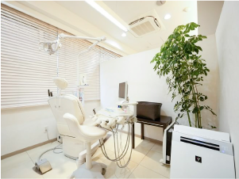
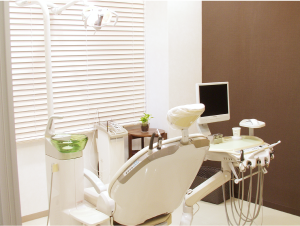
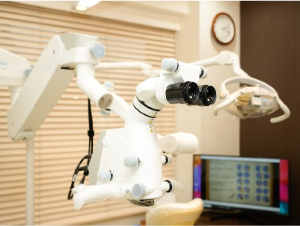
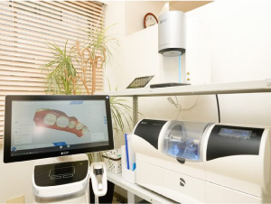
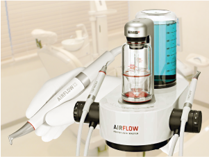
院長・スタッフ
院長 小林 立明（こばやし たつあき）
当院はリラックスして通い続けることができる歯科医院を目指しています。それは、治療が終わったあともできるだけ長く歯のサポートをすることで患者さまの歯の健康をより長く保つためです。どんな小さなお悩みも話をうかがいますので、お気軽に来院していただきたいと思います。
経歴
- 2003年 日本大学松戸歯学部 卒業
- 2003年〜2006年 弘進会 宮田歯科 勤務
- 2006年〜2009年 ウニクス三芳歯科 勤務
- 2009年10月 市ヶ谷防衛省前歯科クリニック 開業
スタッフ（歯科衛生士・歯科助手）：患者様とのコミュニケーションを大切にしながら居心地の良い歯科医院づくりを心掛けています。日々進歩する歯科医療技術の習得にも力を入れております。
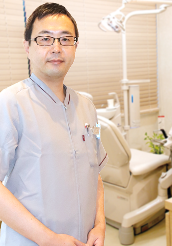
自由診療価格表
当クリニックの自由診療（自費治療）の料金表です。症例により料金が異なる場合がありますのであくまで目安としてご参照下さい（すべて税込）。
| 治療内容 | 素材・方式 | 標準料金 | 期間・回数目安 |
|---|---|---|---|
| セレックシステム | グラスセラミック | 詰め物 ￥44,000 ／ 被せ物 ￥66,000 | − |
| 高強度グラスセラミック | 詰め物 ￥66,000 ／ 被せ物 ￥88,000 | − | |
| ジルコニア | 詰め物 ￥88,000 ／ 被せ物 ￥110,000 | − | |
| ホワイトニング | オフィスホワイトニング（上下） | ￥16,500 | 1日・1回 |
| ホームホワイトニング（上下） | ￥22,000〜￥44,000 | 1ヶ月・3回 | |
| 部分矯正 | ワイヤー矯正 | ￥220,000〜￥440,000 | 6ヶ月〜1年・12〜24回 |
| マウスピース矯正 | ￥440,000〜￥660,000 | 6ヶ月〜1年・12〜24回 | |
| 小児矯正 | 小児矯正 I期 | ￥55,000〜￥330,000 | 3年〜4年・72〜96回 |
| 小児矯正 II期 | ￥55,000〜￥1,100,000 | 3年〜4年・72〜96回 | |
| インプラント | インプラント（一歯） | ￥385,000〜￥4,400,000 | 3ヶ月〜6ヶ月・3〜12回 |
| その他 | レーザー治療 | ￥1,100〜￥5,500 | − |
- セラミックには3年間の保証をお付けいたします（定期的なメインテナンス受診が条件）。
- より細かな色調の再現をご希望の場合は別途費用がかかります。
- 自由診療による歯科治療は、医療費控除を確定申告すると治療費の一部を還付してもらえる場合があります。医療費控除額（最高200万）＝実際に支払った医療費の合計額−保険金などで補填される金額−10万円（総所得等が200万円未満の人はその5％）。
診療時間
| 診療時間 | 月 | 火 | 水 | 木 | 金 | 土 | 日 |
|---|---|---|---|---|---|---|---|
| 午前 10:00〜13:00 | ○ | ○ | △ | ○ | ○ | ○ | × |
| 午後 14:00〜19:00 | ○ | ○ | △ | ○ | ○ | △ | × |
- 診療時間：平日 10:00〜19:00
- 土曜は17:00まで（△）
- 休診日：日曜・祝祭日（水曜不定休）
アクセス・お問い合わせ
- 住所
- 〒162-0845 新宿区市谷本村町3-19 千代田ビル1F
- メール
- info@ichigaya6474.com（お名前と連絡先をご記入ください）
- 最寄り
- 市ヶ谷駅（JR総武線・東京メトロ有楽町線・南北線・都営新宿線）から徒歩4分 ／ 四谷駅（JR総武線・東京メトロ南北線・丸の内線）から徒歩6分
- 受付
- 各種保険取扱い ／ 新患・急患随時受付
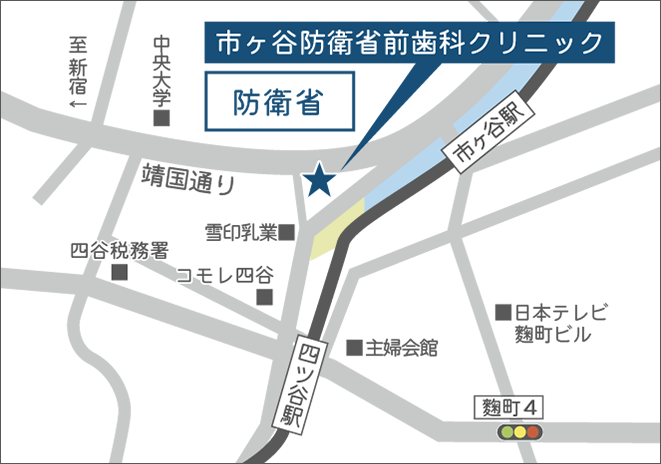